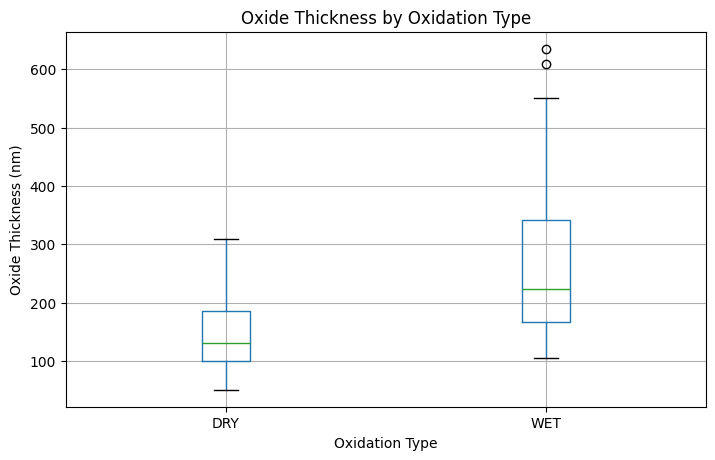
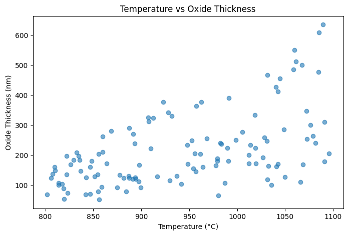
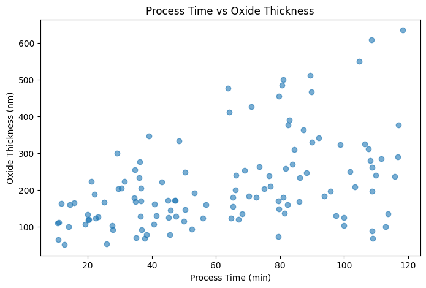
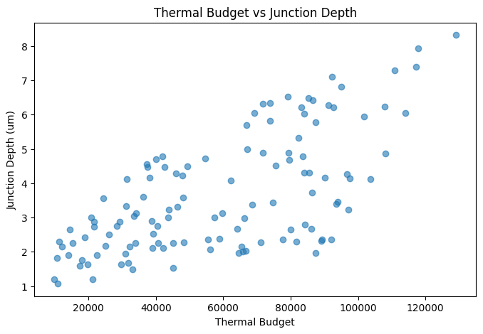

Oxide Thickness by Oxidation Type

결과 해석 · 공정 관점
산화 방식별 산화막 두께 분포를 비교했습니다. Wet과 Dry 조건은 성장 특성이 다르므로, 목표 두께와 균일도 기준에 맞춰 공정 창을 관리해야 합니다.
확산 및 산화 공정에서 온도와 공정 시간이 산화막 성장과 공정 결과에 미치는 영향을 분석하고, Thermal Process의 주요 특성을 시각화한 프로젝트입니다.
반도체 열공정에서는 온도와 시간이 확산 및 산화 반응에 직접적인 영향을 주기 때문에 안정적인 Thermal Budget 관리가 중요합니다.
공정 온도와 산화막 두께 데이터를 비교하여 온도 변화에 따른 Oxide Growth 특성을 확인할 수 있도록 분석했습니다.
동일하거나 유사한 온도 조건에서 공정 시간이 증가할 때 산화막 성장 결과가 어떻게 변화하는지 비교하도록 구성했습니다.
Temperature, Process Time, Oxide Thickness 등의 주요 변수를 함께 비교하여 공정 조건과 결과값 사이의 관계를 시각적으로 확인했습니다.
평균값뿐 아니라 조건별 결과 분포와 산포를 함께 확인하여 특정 Thermal 조건에서 공정 변동성이 증가하는지 살펴볼 수 있도록 했습니다.
열공정은 온도 변화에 민감하기 때문에 Furnace 내부의 온도 균일도와 Recipe 안정성이 공정 결과의 균일성을 결정하는 중요한 요소가 될 수 있습니다.
높은 온도 또는 긴 공정 시간은 원하는 반응을 촉진할 수 있지만, 과도한 Thermal Budget은 불필요한 확산이나 목표 특성 변화로 이어질 수 있으므로 관리가 필요합니다.
Oxide Thickness의 장기적인 Drift가 발생한다면 Recipe뿐 아니라 Furnace Zone별 온도, 공정 시간 및 장비 상태를 함께 확인하는 방식으로 원인 후보를 좁힐 수 있습니다.
Diffusion 및 Oxidation 공정 분석 코드는 GitHub Jupyter Notebook에서 확인할 수 있습니다.
View Notebook on GitHub →Diffusion 및 Oxidation 공정 분석의 실제 실행 결과입니다.
실제 분석 결과 보기 →아래 그래프는 해당 Python 노트북에서 실제 실행되어 저장된 출력입니다.

결과 해석 · 공정 관점
산화 방식별 산화막 두께 분포를 비교했습니다. Wet과 Dry 조건은 성장 특성이 다르므로, 목표 두께와 균일도 기준에 맞춰 공정 창을 관리해야 합니다.

결과 해석 · 공정 관점
온도와 산화막 두께의 관계를 확인한 결과입니다. 열 조건 변화가 막 성장에 미치는 영향을 공정 레시피 관점에서 점검할 수 있습니다.

결과 해석 · 공정 관점
공정 시간과 산화막 두께의 관계를 표시했습니다. 시간은 열 공정의 누적 효과를 결정하는 핵심 조절 변수 중 하나입니다.

결과 해석 · 공정 관점
Thermal Budget과 접합 깊이의 관계를 확인했습니다. 열 이력은 도펀트 확산에 영향을 주므로, 소자 설계 목표와 함께 관리해야 합니다.